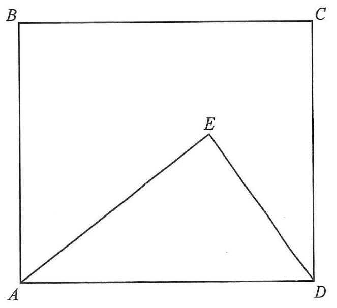

$ABCD$ is a rectangle, so $AB \parallel CD$, $BC \parallel AD$ and $\angle BAD = 90^\circ$.
Point $E$ lies inside the rectangle so that $\triangle ADE$ has $AE=20$ and area $150$.
We must find the perpendicular distance from $E$ to side $CD$ (the top edge).
Taking $AE$ as base and $DE$ as height (right angle at $E$ is used below):
$$\text{Area of }\triangle ADE=\tfrac12 \times AE \times DE = 150$$ $$\tfrac12 \times 20 \times DE = 150$$From $\tfrac12 \times 20 \times DE = 150$:
$$10 \times DE = 150 \;\Rightarrow\; DE = 15\text{ cm}$$$AD^2 = AE^2 + DE^2$
$$AD^2 = 20^2 + 15^2 = 400 + 225 = 625$$ $$AD = 25\text{ cm}$$Let $F$ be the foot of the perpendicular from $E$ to $AD$. Using area again with base $AD$:
$$\tfrac12 \times AD \times EF = 150$$ $$\tfrac12 \times 25 \times EF = 150 \;\Rightarrow\; EF = 12\text{ cm}$$Let $x$ be the perpendicular distance from $E$ to $CD$. In the right triangle formed by $DE$, $EF$ and this distance:
$$x^2 + EF^2 = DE^2$$ $$x^2 + 12^2 = 15^2$$ $$x^2 = 225 - 144 = 81 \;\Rightarrow\; x = 9$$